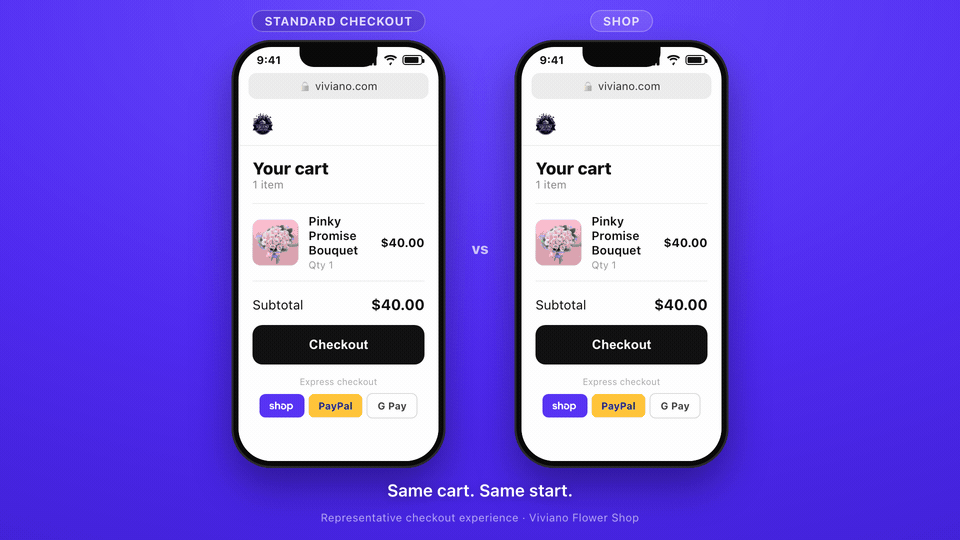

The case for taking Viviano online on Shopify — web first: what the platform actually is, why it’s worth the move, and the honest cost-and-return behind it. MAS, phone orders, and your in-store setup stay exactly as they are. Built from your own numbers and your latest Heartland (Global) cost-plus pricing, not a template.
Your new rates, read back
Why move — the short version
You’re on a custom site you host, patch, and pay to change. Shopify is a platform that’s built, secured, and improved for you. What that buys Viviano:
Shop Pay converts up to 50% higher; the Shop App, Audiences, and real SEO / AI discovery reach buyers you can’t today. Same traffic, more orders.
A current, mobile-first checkout — with hosting, security, PCI, and your two biggest days (Valentine’s, Mother’s Day) carried by Shopify, not you.
Hundreds of updates a year, AI like Sidekick, and an app for almost anything — built in. You ride the roadmap instead of funding one.
Online now, native B2B for corporate & funeral when ready, POS if in-store ever moves — one admin over the MAS data you keep.

Mapped to how you run
Your business, not a feature list — the short version here, the full walk-through in the Use cases tab.
| Your use case | How we handle it on Shopify |
|---|---|
| Online store · the web third | Shop Pay + a floral-native checkout — delivery dates, gift messages, carrier-calculated shipping |
| Corporate & funeral portals | Native B2B — accounts, price lists, net terms; nothing custom to re-quote each year |
| Multi-recipient & holiday sends | One order fans out to many addresses, dates, and card messages |
| Phone & in-store | Unchanged — MAS → Heartland stays exactly as it runs today |
| Discovery & growth | Shop App presence, Audiences retargeting, and strong SEO / AI discoverability |
Web first, low-risk: only the online third moves — phone and in-store stay as they are. None of it leans on card savings; see Rate reality.
The honest starting point
Your repriced Heartland deal is cost-plus 0.35% + 15¢ (down from 1.09% + 40¢) — a near-wholesale rate. Shopify Payments is a flat 2.25% + 30¢, which at your $110 ticket lands ~+$4–7K a year higher. A modest cost, not a saving.
So this isn’t a card-savings pitch. That added cost is in the TCO as one. The return comes entirely from conversion, displaced website spend, and unification — the next tabs.
Per-$100 figures use a typical card-not-present interchange blend; your statement firms them up. Phone and in-store stay on your Global deal — not part of a web-first move.
Total cost of ownership · web first
Everything you’d actually pay, and everything Shopify displaces against it. Estimated for planning — exact figures get finalized in your quote (plan term and any build-period promo).
| Line item | Year 1 | Ongoing / yr |
|---|---|---|
| Shopify Plus Greater of plan floor or 0.35% of revenue; at ~$3.3M online the floor applies | $27,600 | $27,600 |
| Apps Delivery-date picker, one-to-many recipients, gift messages; B2B native on Plus | $1,800 | $1,800 |
| Online card processing Shopify Payments runs modestly above your repriced cost-plus deal (est. +$4–7K); see Rate reality | +$5,000 | +$5,000 |
| Implementation (one-time) Floral build, MAS API integration, data migration | $15K–40K | — |
| Gross Shopify cost | $49K–74K | $34,400 |
| Less — Xpressions hosting & SEO displaced ($499/mo, confirmed) | −$5,988 | −$5,988 |
| Less — variable Xpressions development (portals, backend, change requests — pending your spreadsheet) | − TBD | − TBD |
| Net Shopify cost (before dev displacement & any return) | ~$43K–68K | ~$28,400 |
MAS, phone, and your servers don’t change, so they’re not in the math. MAS stays your system of record at $550/mo + 20¢ per web order (~$6K/yr) and already runs an API that interfaces with your website — Shopify connects through that same API. Phone orders keep flowing MAS → Heartland on your repriced cost-plus deal, and your in-house backup appliance stays. None of it is an added Shopify cost, and none of it a saving.
If you ever unify in-store too, the card gap only gets wider now — your in-store and debit volume is even cheaper under the new cost-plus deal, so moving it to a flat rate would add on the order of +$20–25K/yr, plus ~$6K/yr POS Pro. That’s a separate decision for when unification and lift clearly outweigh it. Web-first keeps the door open without paying for it.
Return on investment
With your repriced card deal, the platform costs a little more on fees, not less — so it pays for itself purely on conversion and displaced website spend. The question is simple: how much more of the online traffic you already have do you need to convert to cover the net cost? At your scale, not much.
Illustrative — Shop Pay converts up to 50% higher than guest checkout for buyers who use it, so even a few points across your online third is realistic. Net is after the ~$28,400/yr net platform cost.
| Scenario | Online lift | Added revenue / yr | Gross profit (45%) | Net / yr | ROI |
|---|---|---|---|---|---|
| Conservative | +3% | +$99K | +$45K | +$16K | ~47% |
| Base | +5% | +$165K | +$74K | +$46K | ~133% |
| Upside | +8% | +$264K | +$119K | +$90K | ~263% |
What’s not even in these numbers yet: the variable Xpressions development you displace (pending your spreadsheet), SEO/AI discoverability, carrier-calculated shipping, and a native B2B/wholesale channel. Every one of those pushes the return up from here.
Assumptions, so you can check my work: ~$3.3M online / ~30,000 orders a year at a $110 ticket; Shopify online 2.25% + 30¢ runs ~$5K/yr above your repriced cost-plus deal (a cost, not a saving); contribution margin assumed ~45% — tell me your real number and I’ll re-run it; net platform cost = $34,400 gross − ~$6,000 hosting displaced = ~$28,400/yr; ROI = net ÷ gross platform cost. Conversion lifts are illustrative, not promised.
Where the lift comes from
Your website already works — but a clunky, guest-heavy checkout quietly costs you orders. This is the biggest opportunity in front of you: take the traffic you already have and convert more of it. That’s what moves the ROI table above.
The real win — conversion & friction
Converts up to 50% higher than guest checkout, and it lands entirely on the online third you’re moving. The same traffic, more orders.
Returning buyers are recognized and one-click their way through — stripping out the guest-checkout friction that costs conversions on the custom site today.
Your checkout, your rules: delivery-date picker, gift and card messages, local-delivery logic — and it’s where the corporate & funeral-home portals you built with Xpressions live natively.
The “50 arrangements to 50 addresses” corporate and holiday case handled in a single order, not fifty.
Growth & unification
Your store becomes discoverable in Shop, with order tracking buyers actually use — a new channel you don’t have today.
Find high-intent flower buyers and retarget them across Shopify’s network — real acquisition, not guesswork. (Plus)
Show up when buyers ask an assistant “where do I order flowers near me” — exactly what your digital advisor flagged.
Your online store now, a native B2B / wholesale channel when you’re ready, and POS if and when in-store ever moves — all over the MAS data you keep.
Shopify, mapped to how you run
Not a feature list — your actual business, your side of the screen. Each tab is one way Viviano takes orders today and how it runs on Shopify, web first.
About $3.3M and ~30,000 orders a year run through your website today, on a custom build with a guest-heavy checkout. This is the volume that moves to Shopify first.
The win: the same traffic you already have, converting higher — one-click Shop Pay, a floral-native checkout, and carrier-calculated shipping. This is where the ROI comes from.
Online Store + Shop Pay Checkout Extensibility
Custom Xpressions site, guest checkout, limited floral logic.
One-click Shop Pay, delivery-date picker, gift & card messages, local-delivery rules, carrier-calculated shipping.
Xpressions built and maintains custom portals for your corporate and funeral-home accounts — a variable development cost that changes every year.
The win: native B2B replaces that custom build — company accounts, per-account pricing, net terms, a gated catalog — with nothing custom to maintain or re-quote annually.
B2B / wholesale (Plus) Company price lists
Custom portals maintained by Xpressions, re-quoted yearly.
Company accounts with their own login, price lists, net terms and reorder flows — native on Plus, in one admin alongside the online store.
Corporate gifting and holidays mean one buyer sending many arrangements to many addresses — handled by hand or as dozens of separate orders today.
The win: one order fans out to every recipient — each with its own address, delivery date and card message. Big for corporate accounts and peak holidays.
One-to-many recipients app
50 arrangements to 50 addresses = 50 orders, entered manually.
A single order with many recipients, dates and messages — one checkout, one payment.
Web-first is deliberately low-risk: your phone and in-store operations keep running exactly as they do now.
The win: nothing moves that doesn’t need to. MAS stays your system of record through its API, phone keeps flowing MAS → Heartland, and your backup appliance stays.
MAS API Phase 2 · Shopify POS
Phone orders entered in MAS → Heartland; in-store on your current setup.
No change. In-store on Shopify POS is a later, separate decision — not part of this.
Today new customers find you through a custom site with weak SEO and no presence in Shopify’s buyer network.
The win: acquisition channels you don’t have now — and discoverability when a buyer asks an AI assistant where to order flowers near them.
Shop App Shopify Audiences (Plus) SEO & AI
Discovery limited to the custom site’s organic reach.
Shop App presence, Audiences retargeting across Shopify’s network, and strong SEO / AI discoverability.
How this fits together
Shopify takes the web channels; MAS stays the system of record and connects through the API it already runs. Phone and in-store don’t change.
Who’s buying
How the order comes in
System of record & payments
Web-first scope: the two accent channels go live on Shopify and sync to MAS through its existing API. Phone stays MAS → Heartland and in-store stays on your current setup; Shopify POS is a later, optional step (the dashed box).